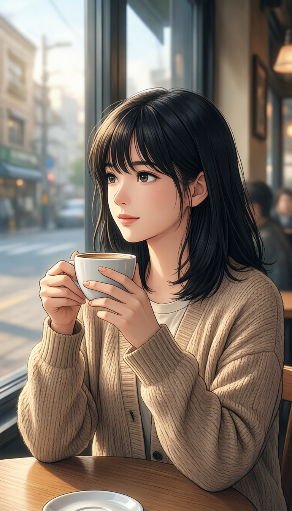
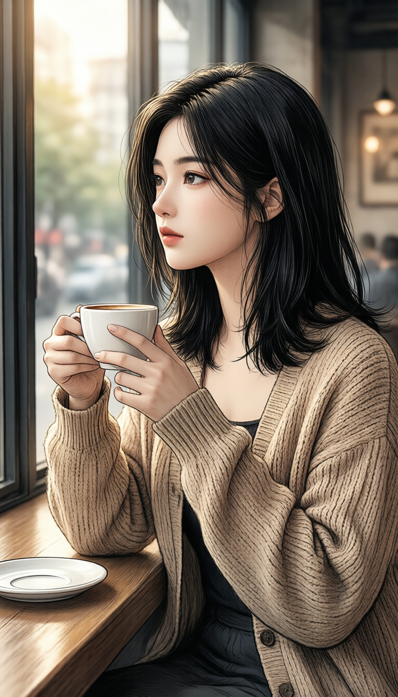

风格目录数据 + 实测预览墙：形态 × 画风两层组织（4 形态 × 18 画风），含视觉特征 / 锚点词 / 质感配方 / 可行度明细，各主画风用本套技术栈实际跑出的样张与三档采样视频。"怎么选"的规则在规范附录 J·J.3，本文不重复。
配套阅读：规范附录 J（规则版） · 工具方法论（怎么干） · 体系分析（为什么）
谱系 v1.46（2026-10-08；措辞修订：厘清主/备验证轴与主/辅角色轴，v1.45 见下）。演进只改本文 + 自版本号递增（v1.x），不动规范版本号（规范附录 J 定位与 J.3 权威不变）；承载 J.1/J.2/J.4 完整内容，编号沿用 J.0–J.4 防查找漂移。
服务 AI 漫剧（竖屏短剧）有效视觉范围，按 形态 × 画风两层组织：形态层 = 四大制作形态（仿真人 / 2D 漫 / 3D 漫 / 沙雕漫）；画风层 = 各形态内主用画风（18 项）。2026-09-19 对照 2026 漫剧百强榜生态重构，移除无市场美术向风格 14 项。
「主」= 已被真实项目（《安妮的夏天》）验证跑通的画风（11 项）；「备」= 已登记入谱、但尚未经项目验证的主风格候选（7 项：A 系年代胶片 / DV·CCD / 黑白电影、C 系美式卡通 / 扁平矢量、D 系奇幻童话 / 暗黑·哥特）——选「备」作主风格风险自担。注意：主 / 备是验证状态，与「主风格 / 辅助风格」的使用角色无关，「备」≠ 辅助画风。
① 提示词锚点 / 模型先验（主导，占 70%+）；② 采样参数（质感档：采样器 × 调度器 × 步数 × CFG）；③ 参考锁风格（H3 Ref2VA 以概念图锁动态一致性，或挂风格 LoRA）。
● 高（原生）＝ Qwen-Image 直出即达、无需额外资源；● 中（需 LoRA/后期）＝ 需社区 LoRA、ControlNet 或后期校色 / 排版辅助；● 低（探索）＝ 实验性质、效果波动，立项慎选。
风格预览 / 立项确认一律走预览档（出图 Lightning 4 步、视频 H3 turbo 8 步或 FastH3 蒸馏 8 步——不改变风格基调）；确认后正式产出走标准档（出图 euler/normal/20步/CFG 2.5、视频 20 步）。
选定 1 个主风格（家族 + 具体风格，全片唯一、任何时刻仅 1 个；候选含全部「主」「备」条目）＋ 可选 1 个辅助风格挂气氛（按剧情需要，如都市剧挂冷调悬疑气氛）。辅助候选域封闭：仅 B 青春治愈系（清新生活流）与 D 类型氛围系（冷调悬疑 / 赛博科幻 / 神话国风 / 奇幻童话 / 暗黑哥特），从 J.1 跨形态氛围档中选，按规范 J.3 固化。
| 形态 | 对应画风 | 适配题材 | 技术要点 |
|---|---|---|---|
| 仿真人 | A 写实影像系（6） | 都市 / 情感 / 霸总 / 年代 | Qwen + H3 最稳；R2V 锁音色与画风 |
| 2D 漫 | C 动画插画系（5） | 甜宠 / 古风 / 玄幻 / 规则怪谈 | R2V 锁画风；五官偶有偏移需多抽卡 |
| 3D 漫 | E·3D CG（1） | 玄幻 / 仙侠 / 末世 / 逆袭 | 2026 红果热榜主流形态；2026-09-19 实测：H3 三档稳定，Qwen 直出偏写实 / 仿真人，需 3D 质感 LoRA 或后期 |
| 沙雕漫 | C·美式卡通 / 扁平矢量（Q 版表情包） | 喜剧 / 脑洞 | 复用 2D 漫画风；微动、表情包节奏 |
| 跨形态氛围档 | B 青春治愈系（1）＋ D 类型氛围系（5） | 甜宠 / 悬疑 / 科幻 / 古风 | 在选定画风上叠加氛围配方（J.2 质感档） |
| 家族 | 风格（可行度） |
|---|---|
| A 写实影像系（仿真人形态 · 主3备3） | 拟真人·仿真人动漫「主」●高 / 数字电影写实「主」●高 / 胶片电影感「主」●高 / 年代胶片（千禧·90s·80s）「备」●高 / DV·CCD 数码复古「备」●高 / 黑白电影「备」●高 |
| B 青春治愈系（跨形态氛围档 · 主1） | 清新生活流「主」●高 |
| C 动画插画系（2D 漫形态 · 主3备2） | 日式动漫（赛璐璐·新海诚·吉卜力）「主」●高 / 韩漫·精致美型「主」●高 / 国漫·新中式插画「主」●高 / 美式卡通「备」●高 / 扁平矢量·低多边形「备」●高 |
| D 类型氛围系（跨形态氛围档 · 主3备2） | 冷调悬疑「主」●高 / 赛博·科幻「主」●高 / 神话国风「主」●高 / 奇幻童话「备」●高 / 暗黑·哥特「备」●高 |
| E 材质工艺系（3D 漫形态 · 主1） | 3D CG「主」●中 |
注（v1.43 谱系重构）：2026-09-19 按 AI 漫剧有效范围移除 14 项、不再列示——F 艺术绘画系全部（印象派·油画 / 水彩·水墨 / 版画·木刻 / 拼贴混合媒材）、E 系黏土·定格动画 / 像素·8bit / VHS·CRT 低保真 / 拼贴·图形设计、A 系纪实·街拍、B 系奶油糖果色 / 日系青春写真 / 暖调治愈（并入清新生活流变体）、C 系水彩绘本 / 手绘速写·素描；预览墙同步删除展示。
| 风格 | 视觉特征 | 锚点词示例 | 质感配方 | 可行度 |
|---|---|---|---|---|
| 拟真人·仿真人动漫「主」 | 仿真人角色、贴近真人神态 / 微表情、立体感强、保留动漫美感；红果漫剧平台主推画风。角色与场景/道具分两套锚点强度（2026-09-19 安妮的夏天实测）：角色 Base 加动漫化锚点（动漫渲染、非真人照片、2D 动漫质感、二次元插画质感），场景/道具 Base 不加动漫化词、保持写实——角色是"动漫里的人"、场景是"真实环境" | realistic human-like anime, lifelike expression, cinematic（中文直译：仿真人动漫 / 拟真人） | 预览档 Lightning 4步 / euler / normal / CFG 2.0 标准档 euler / normal / 20步 / CFG 2.5 | ●高 |
| 数字电影写实「主」 | 现代院线片、干净锐利、浅景深 | cinematic still, anamorphic, shallow depth of field | 同上 | ●高 |
| 胶片电影感「主」 | 柯达/富士胶卷色调、颗粒、高光溢出 | Kodak Gold / Portra, film grain, halation | 同上 | ●高 |
| 年代胶片（千禧·90s·80s）「备」 | 时代滤镜、褪色、暖偏 | 2000s film still, faded, warm vintage | 同上 | ●高 |
| DV·CCD 数码复古「备」 | 低清、噪点、数码色偏、回忆感 | old DV camcorder, CCD sensor, video noise | 同上 | ●高 |
| 黑白电影「备」 | 去色、影调对比、经典叙事 | black and white, high contrast, film noir | 同上 | ●高 |
| 风格 | 视觉特征 | 锚点词示例 | 质感配方 | 可行度 |
|---|---|---|---|---|
| 清新生活流「主」 | 明亮低饱和、柔光、干净 | bright, low saturation, soft light, airy | 预览档 Lightning 4步 / euler / normal / CFG 2.0 标准档 euler / normal / 20步 / CFG 2.5 | ●高 |
| 风格 | 视觉特征 | 锚点词示例 | 质感配方 | 可行度 |
|---|---|---|---|---|
| 日式动漫「主」 | 赛璐璐 / 新海诚 / 吉卜力 | anime, cel shading, Makoto Shinkai style / Ghibli | 预览档 Lightning 4步 / euler / normal / CFG 2.0 标准档 euler / normal / 20步 / CFG 2.5 | ●高 |
| 韩漫·精致美型「主」 | 韩式动漫美学、五官精致高颜值、肤质通透、明快上色；红果甜宠 / 都市题材主流 | Korean manhwa style, refined beautiful face, glossy clean skin, webtoon（中文直译：韩漫 / 精致美型） | 同上 | ●高 |
| 国漫·新中式插画「主」 | 国风线条、淡雅设色 | Chinese animation, ink-wash accent | 同上 | ●高 |
| 美式卡通「备」 | 夸张造型、厚涂 | American cartoon, bold line, vibrant | 同上 | ●高 |
| 扁平矢量·低多边形「备」 | 几何色块、干净图形 | flat vector illustration, geometric, minimal | 同上 | ●高 |
| 风格 | 视觉特征 | 锚点词示例 | 质感配方 | 可行度 |
|---|---|---|---|---|
| 冷调悬疑「主」 | 蓝灰冷调、阴影、紧张 | cold blue tone, moody shadows, thriller | 预览档 Lightning 4步 / euler / normal / CFG 2.0 标准档 euler / normal / 20步 / CFG 2.5 | ●高 |
| 赛博·科幻「主」 | 霓虹、高对比、未来 | cyberpunk, neon, sci-fi, high contrast | 同上 | ●高 |
| 神话国风「主」 | 水墨韵、东方幻想 | Chinese mythology, oriental fantasy, ink | 同上 | ●高 |
| 奇幻童话「备」 | 梦幻光效、超现实 | fantasy, fairytale, magical light | 同上 | ●高 |
| 暗黑·哥特「备」 | 暗调、戏剧光、华丽 | gothic, dark, dramatic chiaroscuro | 同上 | ●高 |
| 风格 | 视觉特征 | 锚点词示例 | 质感配方 | 可行度 |
|---|---|---|---|---|
| 3D CG「主」 | 皮克斯 / 游戏渲染、体积光。2026-09-19 实测：H3 三档稳定，Qwen 直出偏写实 / 仿真人，需 3D 质感 LoRA 或后期 | 3D render, Pixar style, game CG, subsurface | 预览档 Lightning 4步 / euler / normal / CFG 2.0 标准档 euler / normal / 20步 / CFG 2.5 | ●中 |
各主画风用本套技术栈实际跑出的样张：左侧竖图 = 概念预览（点击放大）；右侧三段视频 = 同一镜头的三档采样结果——标准 20 步（成片基准）/ turbo 8 步（打样最快）/ FastH3（快速出片带原生音频）。素材位于项目 resources/H3-Style/_style_preview/（随应用资源打包/迁移）。

C1 日式动漫
C2 国漫·新中式插画| 风格 | 采样器 | 调度器 | 步数 | CFG | 提示词锚点 | 参数版本 |
|---|---|---|---|---|---|---|
| A1 数字电影写实 | euler | normal | 20 | 2.5 | 现代院线片质感，干净锐利，浅景深，cinematic still, anamorphic, shallow depth of field | 标准档 |
| A2 胶片电影感 | euler | normal | 20 | 2.5 | 柯达/富士胶卷色调，细腻颗粒，高光溢出，Kodak Gold / Portra, film grain, halation | 标准档 |
| A7 拟真人仿真人动漫 | euler | normal | 20 | 2.5 | 仿真人动漫/拟真人，贴近真人神态微表情，立体感强，保留动漫美感，realistic human-like anime | 标准档 |
| B1 清新生活流 | euler | normal | 20 | 2.5 | 明亮低饱和，柔光，干净通透，bright, low saturation, soft light, airy | 标准档 |
| C1 日式动漫 | euler | normal | 20 | 2.5 | 赛璐璐动漫风，新海诚/吉卜力动画电影质感，anime, cel shading, Makoto Shinkai style | 标准档 |
| C2 国漫新中式插画 | euler | normal | 20 | 2.5 | 国漫新中式插画，水墨点缀，东方线条，Chinese animation, ink-wash accent, guofeng | 标准档 |
| C7 韩漫精致美型 | euler | normal | 20 | 2.5 | 韩漫/精致美型，韩式动漫美学，五官精致高颜值，肤质通透，Korean manhwa style | 标准档 |
| D1 冷调悬疑 | euler | normal | 20 | 2.5 | 冷调悬疑氛围，蓝灰冷色调，阴影厚重，紧张感，cold blue tone, moody shadows | 标准档 |
| D2 赛博科幻 | euler | normal | 20 | 2.5 | 赛博科幻氛围，霓虹光效，高对比，窗外未来都市，cyberpunk, neon lights, futuristic | 标准档 |
| D5 神话国风 | euler | normal | 20 | 2.5 | 神话国风氛围，东方幻想意境，水墨晕染，缥缈仙气，Chinese mythology, oriental fantasy | 标准档 |
| E1 3DCG | euler | normal | 20 | 2.5 | 3D CG 渲染质感，皮克斯/游戏 CG 风，次表面散射，细腻光滑，3D render, Pixar style | 标准档 |
所有风格预览图已用标准档（euler/normal/20步/2.5，Qwen-Image 官方推荐）重新生成（2026-09-21）。STAGE3 记录页里的每张图都要显示生成参数（采样器、步数、CFG、seed），参数从 PNG 元数据里自动提取，不要手写。
Qwen-Image 只支持 euler，不要混用 SDXL 采样器（dpmpp_2m_sde、euler_ancestral 等），否则头发乱、脸变形。
提示词锚点词要够强（如"拟真人仿真人动漫"要写全"动漫渲染、非真人照片、2D 动漫质感、二次元插画质感"）。不要写"赛璐璐上色"——它是 2D 平涂 + 粗黑线、轮廓线过粗的主因（2026-09-21 实测：去掉后粗黑轮廓变细、皮肤质感真实化、光影立体），保留"写实光影"即可。
用 sed 替换时容易把脚本代码里的关键词（steps、cfg）也替换了，改完要检查。
所有风格预览图统一用标准档（euler/normal/20步/2.5），不要有的用 Lightning 4步/2.0、有的用标准档。